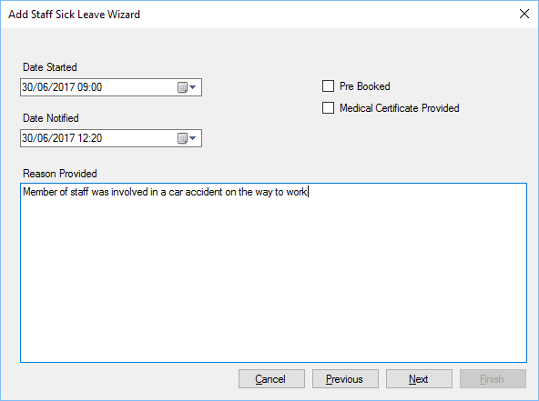

Enter the date and time the sick leave started along with the date and time you were notified.
Pre Booked is specifically for instances where a member of staff will attend hospitals etc.
You should enter as much details as known, this cannot be updated at a later date.
